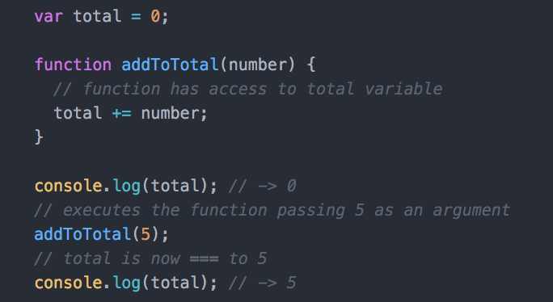
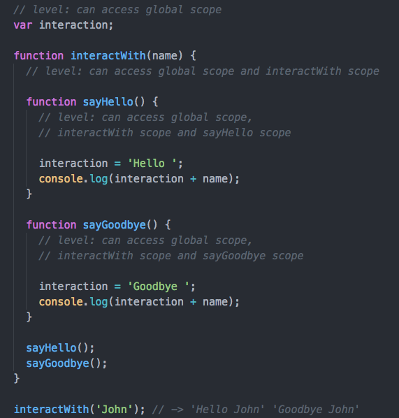

What did you learn last lesson?
Functions
Functions are mini programs within your larger program. Once defined, functions can then be called in order to execute a block of code.
How to write functions

Invoking a function

Arguments

Passing arguments


Lexical scoping
Lexical scope refers to the current location of the code being executed and the access it has to other data in the program.
Functions create a new scope, meaning that code outside the function cannot access its data, functions etc. Inner functions have access to outer function's code, but not vice versa.

Cash Register
jQuery Plugins
Slick Carousel
Site & docs: http://kenwheeler.github.io/slick/
Alternative: http://flickity.metafizzy.co/
Isotope
Site: http://isotope.metafizzy.co/
Docs: http://isotope.metafizzy.co/#getting-started
Lighter Alternative: http://masonry.desandro.com/
jQuery plugin registry
http://plugins.jquery.com/Temperature Converter
Continue building your application from last lesson to convert Celsius input to a Fahrenheit output.
Key Takeaways
-
Functions help control the flow of the program
-
A function is a small block of code that can be invoked at certain points in the program to execute the given commands
-
Scope decides whether you have access to variables and functions based on where in the code you are trying to either invoke a function or access a variable